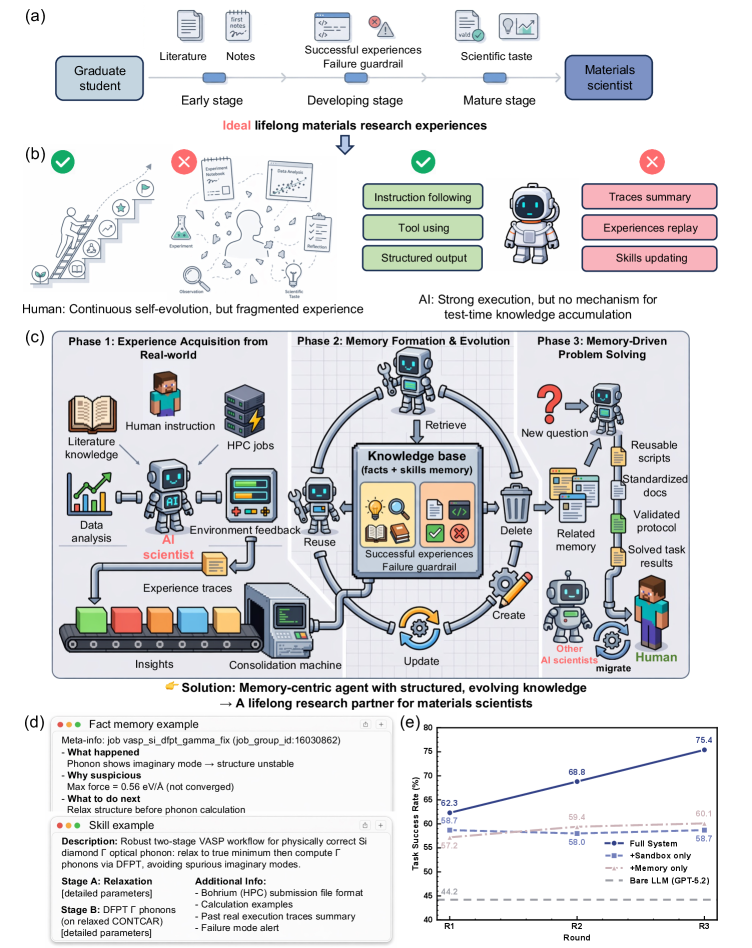

Today's Search Query · 今日检索式(cat:cs.LG OR cat:cs.AI OR cat:cs.CL OR cat:stat.ML) AND (ti:"mechanistic interpretability" OR abs:"mechanistic interpretability" OR ti:"interpretability" OR abs:"interpretability" OR ti:"circuit analysis" OR abs:"circuit analysis" OR ti:"feature attribution" OR abs:"feature attribution" OR ti:"sparse autoencoder" OR abs:"sparse autoencoder" OR ti:"activation steering" OR abs:"activation steering" OR ti:"representation probing" OR abs:"representation probing") AND submittedDate:[202608120000 TO 202608150000]
Lead Story · 今日头条

Figure 1 : Memory-centric self-evolving agent for lifelong materials research. (a) Materials scientists develop judgement by accumulating literature, notes, successful experiences, failure guardrails and scientific taste.
(b) Human experience is cumulative but fragmented, whereas current AI agents execute strongly but usually lack a mechanism for test-time knowledge accumulation.
(c) A memory-centric agent acquires experience from real tasks, consolidates it into structured facts and skills, and retrieves it for new problems.
(d) Examples of fact-memory and skill-memory from a VASP phonon workflow, including job provenance, failure diagnosis, recommended action, DFT relaxation followed by a DFPT phonon calculation and HPC execution notes.
(e) Three-round task-success trends on the MatTools materials-tool-use benchmark show that full memory evolution improves GPT-5.2 from 62.3% to 75.4%, beyond sandbox-only and memory-only variants.